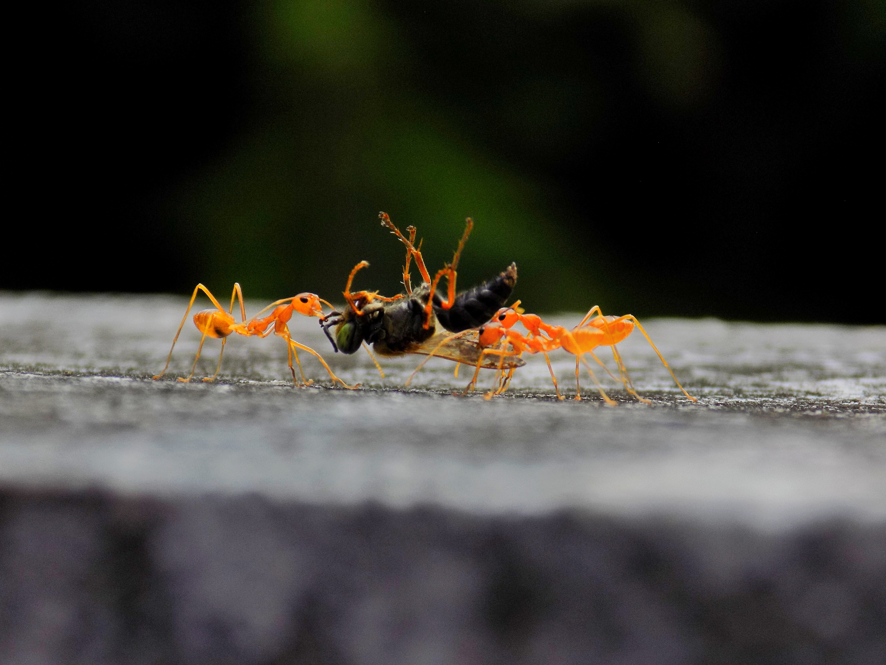
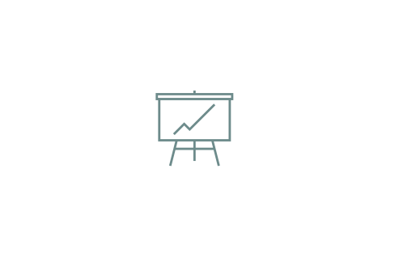
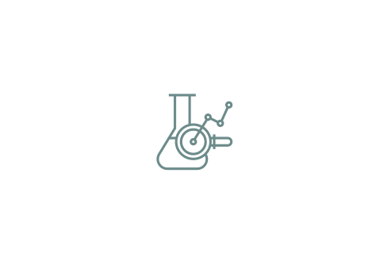
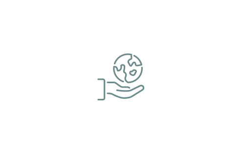
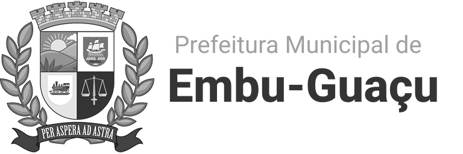

Negócios pautados em sistemas regenerativos e na sustentabilidade
Somos a eQuanta, uma consultoria ambiental que oferece soluções integradas e eficazes para empresas e instituições comprometidas com a sustentabilidade, aliando rigor técnico e custo-efetividade em relações de cooperação, transparência e sinergia. Formamos um corpo técnico multidisciplinar, organizado segundo as necessidades e características de cada projeto. Atendemos organizações, órgãos públicos e empresas privadas que buscam valorizar e tornar suas atividades mais resilientes por meio de práticas sustentáveis e de uma gestão ambiental inovadora.
Compromisso com a sustentabilidade, pautado na pesquisa e aplicação de conhecimento em conjunto com metodologias consolidadas, para compatibilizar o seu projeto à conservação da natureza.
Desde o primeiro contato, você negocia diretamente com quem planeja o seu projeto ambiental, com base em um diálogo franco e objetivo.

Com ênfase nas necessidades específicas de cada projeto, nós desenhamos a melhor solução possível: enxuta e objetiva, visando gerar valor através da conservação da biodiversidade.

Aprimoramos continuamente nossa atuação em: - Otimização do manejo florestal voltado a projetos de recuperação ecológica - Aplicação de técnicas e métricas ecológicas em processos, com foco em eficiência energética - Desenvolvimento de sistemas de análise sob uma abordagem socioecológica, reduzindo impactos sobre os aspectos funcionais e cênicos da natureza - Avanço no uso de novas ferramentas de análise e modelagem de dados ambientais

Na eQuanta, mediamos a intervenção humana em ecossistemas naturais com base no tripé ecologia - responsabilidade distribuída - negócios, e produzimos elementos para a tomada de decisão em projetos que interferem na dinâmica dos ecossistemas naturais terrestres e aquáticos. Nosso propósito é produzir conhecimento técnico e científico que subsidie a tomada de decisão em projetos que interagem com esses ecossistemas, promovendo o desenvolvimento em equilíbrio com a natureza.
- Em ecossistemas terrestres, atuamos junto a empreendimentos imobiliários, indústrias e produtores rurais. - Em ecossistemas aquáticos, atendemos o setor de óleo e gás, portos, marinas, governos e organizações do Terceiro Setor voltadas ao desenvolvimento sustentável.

Visualize nossos projetos concluídos recentemente, categorizados em ambientes terrestres e aquáticos.